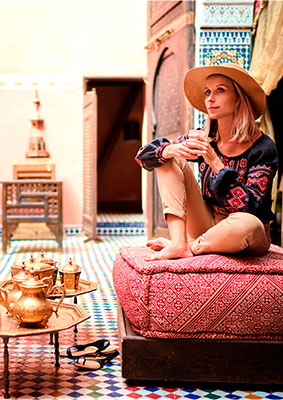
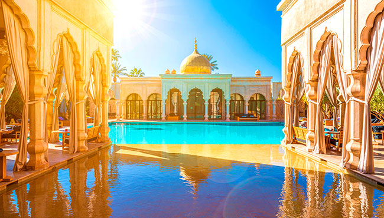
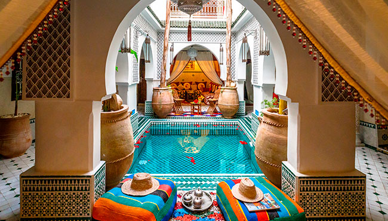
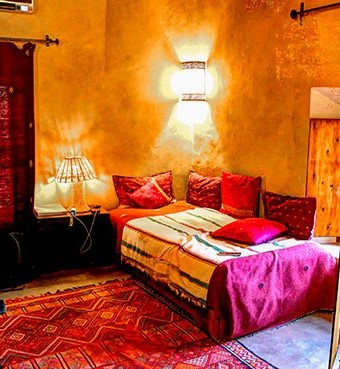
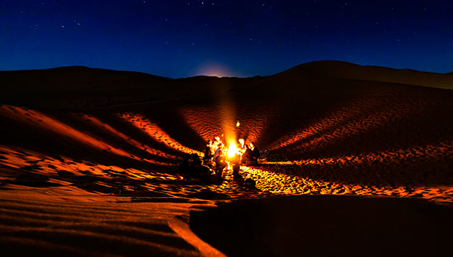
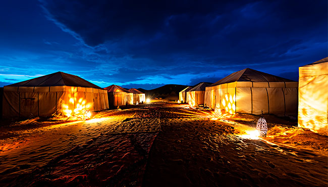

A votre arrivée au Maroc, une pléthore de formes d’hébergements s’offrent à vous : du camping en pleine nature, à l’hôtel de luxe étoilé typiquement marocains. Hospitalité, bien-être, et traditions, tout y est pour passer un séjour idéal au pays du soleil !
Ensemble, ces établissements touristiques : hôtels, riads, maisons d’hôtes, gites, camping, et résidences immobilières, totalisent près de 251 2016 lits à fin 2017. Le ministère du tourisme au Maroc y accorde une importance particulière, puisqu’il s’agit d’un élément déterminant dans le choix d’une destination touristique.
Les maisons d’hôtes |
Les hôtels & Resorts |
Les Riads |
Dans les médinas ou en plein nature, vous vivrez une expérience de bien-être et une ambiance inégalée dans les maisons d’hôtes. En logeant chez les hôtes, vous plongerez dans la culture et les traditions marocaines. Dans un cadre purement traditionnel, le confort et la convivialité seront maîtres.
Les auberges et les gîtes |
Les campings |
Les bivouacs |
Ces demeures aussi confortables qu’élégantes, vous invitent à une hospitalité marocaine des plus conviviales. Séjourner dans les gîtes ou dans les auberges, c’est découvrir l’art de vivre marocain, tout en étant en contact avec les habitants locaux. En plein nature dans les grandes villes du Maroc, les gîtes et les auberges sont aussi luxueux que conviviaux, des excellents types d’hébergements pour mieux connaître les habitants locaux.